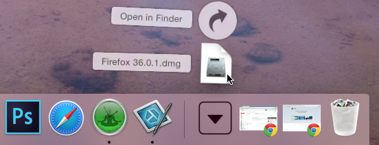
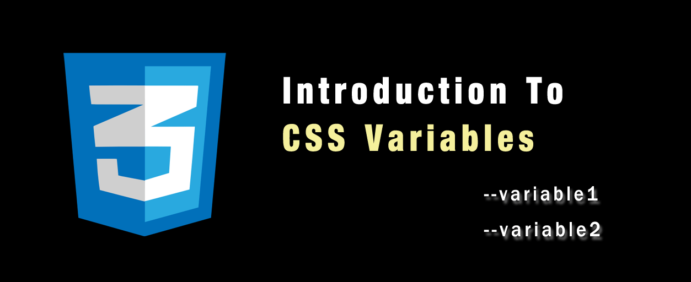
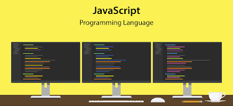
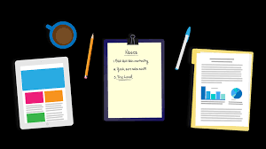

Getting started with the Web is a concise series introducing you to the practicalities of web development. You'll set up the tools you need to construct a simple webpage and publish your own simple code.
It's a lot of work to create a professional website, so, if you're new to web development, we encourage you to start small. You won't build another Facebook right away, but it's not hard to get your own simple website online, so we'll start there. By working through the articles listed below in order, you will go from nothing to getting your first webpage online. Let's go!
When it comes to tools for building a website, there's a lot to pick from. If you're just starting out, you might be confused by the array of code editors, frameworks, and testing tools out there. In Installing basic software, we show you step-by-step how to install just the software you need to begin some basic web development.
Before you start writing the code for your website, you should plan it first. What information are you showcasing? What fonts and colors are you using? What will your website look like? We outline a simple method you can follow to plan out your site's content and design.
A website consists of many files: text content, code, stylesheets, media content, and so on. When you're building a website, you need to assemble these files into a sensible structure and make sure they can talk to one another. Dealing with files explains how to set up a sensible file structure for your website and what issues you should be aware of.
Hypertext Markup Language (HTML) is the code that you use to structure your web content and give it meaning and purpose. For example, is my content a set of paragraphs, or a list of bullet points? Do I have images inserted on my page? Do I have a data table? Without overwhelming you, HTML basics provides enough information to make you familiar with HTML.
Cascading Stylesheets (CSS) is the code that you use to style your website. For example, do you want the text to be black or red? Where should content be drawn on the screen? What background images and colors should be used to decorate your website? CSS basics takes you through what you need to get started.
JavaScript is the programming language that you use to add interactive features to your website, for example games, things that happen when buttons are pressed or data is entered in forms, dynamic styling effects, animation, and much more. JavaScript basics gives you an idea of what is possible with this exciting language, and how to get started.
Once you have finished writing the code and organizing the files that make up your website, you need to put it all online so people can find it. Publishing your sample code describes how to get your simple sample code online with minimum effort.
When you access your favorite website, a lot of complicated things happen in the background that you may not know about. How the web works outlines what happens when you view a webpage on your computer.
The greatest service which can be rendered any country is to add an useful plant to its culture
____________________ Thomas Jefferson, Memorandum of services to my country.